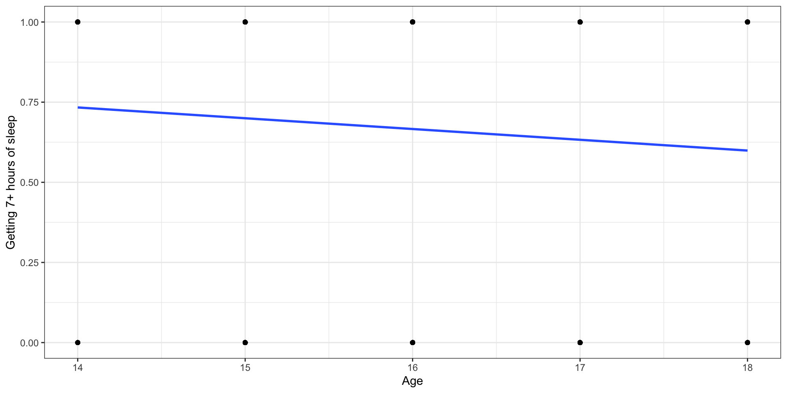
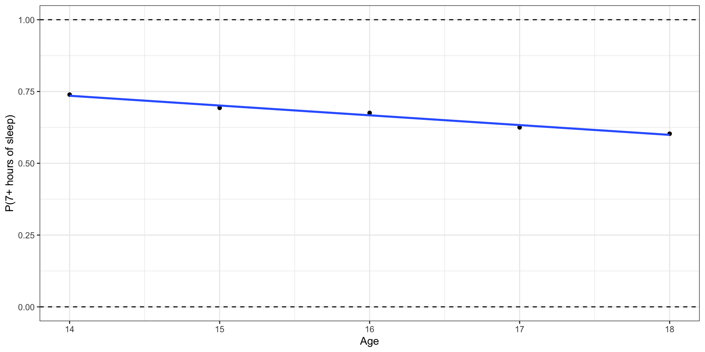
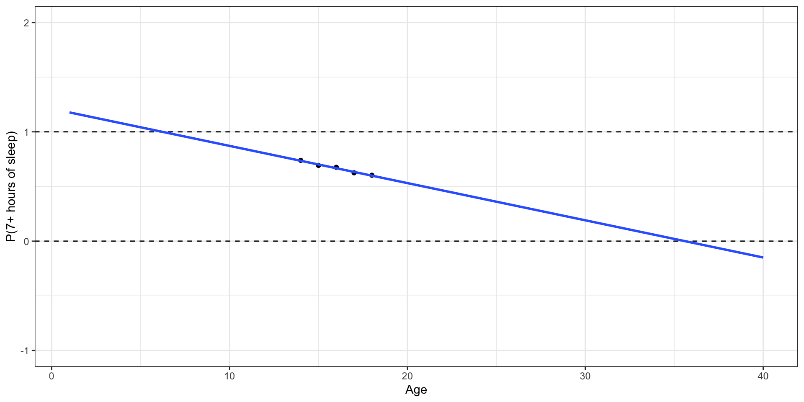
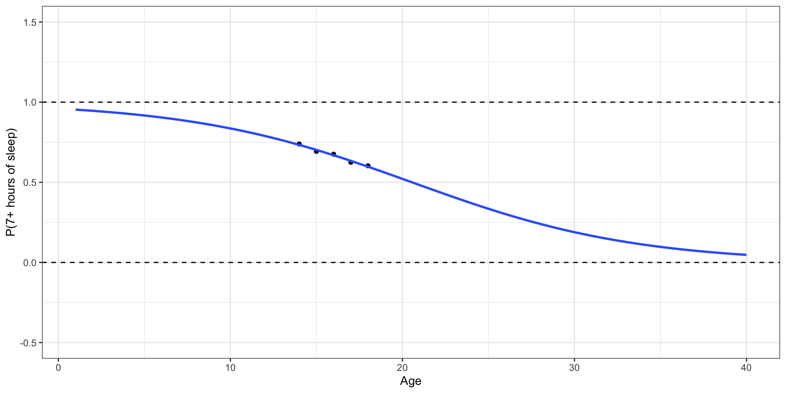
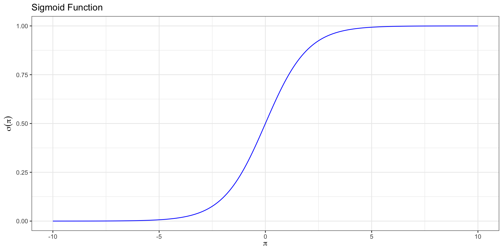
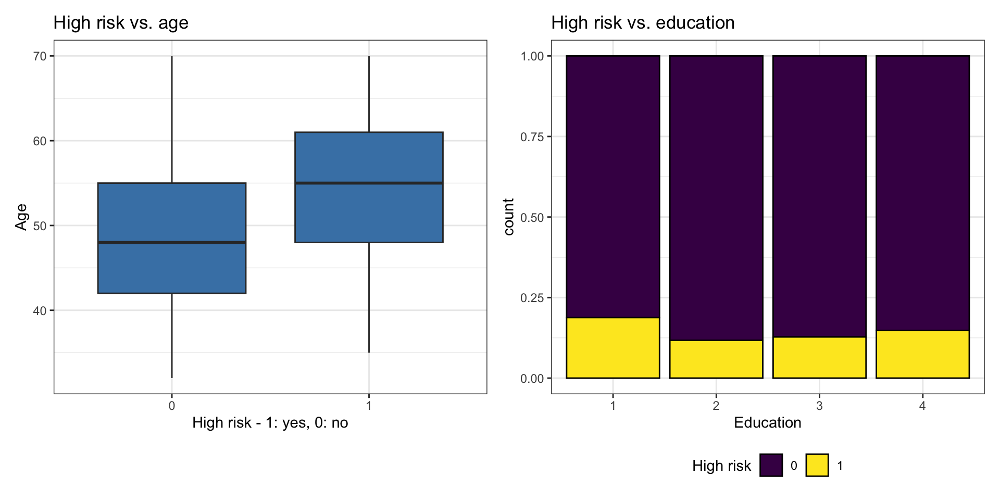

Logistic Regression
Nov 07, 2024
Announcements
Lab 05 due TODAY 11:59pm
Monday, November 11: Project presentations
Looking ahead
- Statistics experience due Tuesday, November 26
Topics
Logistic regression for binary response variable
Use logistic regression model to calculate predicted odds and probabilities
Interpret the coefficients of a logistic regression model with
- a single categorical predictor
- a single quantitative predictor
- multiple predictors
Computational setup
Recap
Do teenagers get 7+ hours of sleep?
Students in grades 9 - 12 surveyed about health risk behaviors including whether they usually get 7 or more hours of sleep.
Sleep7
1: yes
0: no
# A tibble: 446 × 6
Age Sleep7 Sleep SmokeLife SmokeDaily MarijuaEver
<int> <int> <fct> <fct> <fct> <int>
1 16 1 8 hours Yes Yes 1
2 17 0 5 hours Yes Yes 1
3 18 0 5 hours Yes Yes 1
4 17 1 7 hours Yes No 1
5 15 0 4 or less hours No No 0
6 17 0 6 hours No No 0
7 17 1 7 hours No No 0
8 16 1 8 hours Yes No 0
9 16 1 8 hours No No 0
10 18 0 4 or less hours Yes Yes 1
# ℹ 436 more rowsLet’s fit a linear regression model
Outcome: \(Y\) = 1: yes, 0: no
Let’s use proportions
Outcome: Probability of getting 7+ hours of sleep
What happens if we zoom out?
Outcome: Probability of getting 7+ hours of sleep
🛑 This model produces predictions outside of 0 and 1.
Let’s try another model
✅ This model (called a logistic regression model) only produces predictions between 0 and 1.
Probabilities and odds
Binary response variable
- \(Y = 1: \text{ yes}, 0: \text{ no}\)
- \(\pi\): probability that \(Y=1\), i.e., \(P(Y = 1)\)
- \(\frac{\pi}{1-\pi}\): odds that \(Y = 1\)
- \(\log\big(\frac{\pi}{1-\pi}\big)\): log odds
- Go from \(\pi\) to \(\log\big(\frac{\pi}{1-\pi}\big)\) using the logit transformation
From odds to probabilities
- Logistic model: log odds = \(\log\big(\frac{\pi}{1-\pi}\big) = \mathbf{X}\boldsymbol{\beta}\)
- Odds = \(\exp\big\{\log\big(\frac{\pi}{1-\pi}\big)\big\} = \frac{\pi}{1-\pi}\)
- Combining (1) and (2) with what we saw earlier
\[\text{probability} = \pi = \frac{\exp\{\mathbf{X}\boldsymbol{\beta}\}}{1 + \exp\{\mathbf{X}\boldsymbol{\beta}\}}\]
Sigmoid Function
We call this function relating the probability to the predictors a sigmoid function, \[ \sigma(x) = \frac{\exp\{x\}}{1 + \exp\{x\}}= \frac{1}{1+\text{exp}\{-x\}}.\]
Sigmoid Function
Logistic regression
Logistic regression model
Logit form: \[\text{logit}(\pi) = \log\big(\frac{\pi}{1-\pi}\big) = \mathbf{X}\boldsymbol{\beta}\]
Probability form:
\[ \pi = \frac{\exp\{\mathbf{X}\boldsymbol{\beta}\}}{1 + \exp\{\mathbf{X}\boldsymbol{\beta} \}} \]
Logit and sigmoid link functions are inverses of each other.
Note
More on link functions later, if time permits
Goal
We want to use our data to estimate \(\boldsymbol{\beta}\) (find \(\hat{\boldsymbol{\beta}}\)) and obtain the model:
\[ \hat\pi = \frac{\exp\{\mathbf{X}\hat{\boldsymbol\beta}\}}{ 1 + \exp\{\mathbf{X}\hat{\boldsymbol\beta}\}} \]
In this modeling scheme, one typically finds \(\hat{\boldsymbol{\beta}}\) by maximizing the likelihood function.
Linear Regression vs. Logistic Regression
Linear regression:
Quantitative outcome
\(y_i = x_i^\top \boldsymbol{\beta} + \epsilon_i\)
\(E[Y_i] = x_i^\top \boldsymbol{\beta}\)
Estimate \(\boldsymbol\beta\)
Use \(\hat{\boldsymbol\beta}\) to predict \(\hat y_i\)
Logistic regression:
Binary outcome
\(\log\left(\frac{\pi_i}{1-\pi_i}\right) = x_i^\top \boldsymbol{\beta}\)
\(E[Y_i] = \pi_i\)
Estimate \(\boldsymbol\beta\)
Use \(\hat{\boldsymbol\beta}\) to predict \(\hat \pi_i\)
Likelihood function for \(\boldsymbol{\beta}\)
- \(P(Y_i = 1) = \pi_i\). What likelihood function should we use?
- \(f(y_i | x_i, \boldsymbol{\beta}) = \pi_i^{y_i} (1-\pi_i)^{1-y_i}\)
- \(Y_i\)’s are independent, so
\[f(y_1, \dots, y_n) = \prod_{i=1}^n \pi_i^{y_i} (1-\pi_i)^{1-y_i}\]
Likelihood
The likelihood function for \(\boldsymbol\beta\) is
\[
\begin{aligned}
L&(\boldsymbol\beta| x_1, \dots, x_n, y_1, \dots, y_n) \\[5pt]
&= \prod_{i=1}^n \pi_i^{y_i} (1-\pi_i)^{1-y_i} \\[10pt]
\end{aligned}
\]
We will use the log-likelihood function to find the MLEs
Log-likelihood
The log-likelihood function for \(\boldsymbol\beta\) is
\[ \begin{aligned} \log &L(\boldsymbol\beta | x_1, \dots, x_n, y_1, \dots, y_n) \\[8pt] & = \sum_{i=1}^n\log(\pi_i^{y_i}(1-\pi_i)^{1-y_i})\\ &= \sum_{i=1}^n\left(y_i\log (\pi_i) + (1-y_i)\log(1-\pi_i)\right)\\ \end{aligned} \]
Log-likelihood
Plugging in \(\pi_i = \frac{\exp\{x_i^\top \boldsymbol\beta\}}{1+\exp\{x_i^\top \boldsymbol\beta\}}\) and simplifying, we get:
\[ \begin{aligned}\log &L(\boldsymbol\beta | x_1, \dots, x_n, y_1, \dots, y_n) \\ &= \sum_{i=1}^n y_i x_i^\top \boldsymbol\beta - \sum_{i=1}^n \log(1+ \exp\{x_i^\top \beta\}) \end{aligned} \]
Finding the MLE
- Taking the derivative:
\[ \begin{aligned} \frac{\partial \log L}{\partial \boldsymbol\beta} =\sum_{i=1}^n y_i x_i^\top &- \sum_{i=1}^n \frac{\exp\{x_i^\top \boldsymbol\beta\} x_i^\top}{1+\exp\{x_i^\top \boldsymbol\beta\}} \end{aligned} \]
- If we set this to zero, there is no closed form solution.
- R uses numerical approximation to find the MLE.
Example
Risk of coronary heart disease
This data set is from an ongoing cardiovascular study on residents of the town of Framingham, Massachusetts. We want to examine the relationship between various health characteristics and the risk of having heart disease.
high_risk: 1 = High risk of having heart disease in next 10 years, 0 = Not high risk of having heart disease in next 10 yearsage: Age at exam time (in years)education: 1 = Some High School, 2 = High School or GED, 3 = Some College or Vocational School, 4 = College
Data: heart_disease
# A tibble: 4,135 × 3
age education high_risk
<dbl> <fct> <fct>
1 39 4 0
2 46 2 0
3 48 1 0
4 61 3 1
5 46 3 0
6 43 2 0
7 63 1 1
8 45 2 0
9 52 1 0
10 43 1 0
# ℹ 4,125 more rowsHigh risk vs. age
Let’s fit the model
| term | estimate | std.error | statistic | p.value |
|---|---|---|---|---|
| (Intercept) | -5.385 | 0.308 | -17.507 | 0.000 |
| age | 0.073 | 0.005 | 13.385 | 0.000 |
| education2 | -0.242 | 0.112 | -2.162 | 0.031 |
| education3 | -0.235 | 0.134 | -1.761 | 0.078 |
| education4 | -0.020 | 0.148 | -0.136 | 0.892 |
\[ \begin{aligned} \log\Big(\frac{\hat{\pi}}{1-\hat{\pi}}\Big) =& -5.385 + 0.073 \times \text{age} - 0.242\times \text{education}_2 \\ &- 0.235\times\text{education}_3 - 0.020 \times\text{education}_4 \end{aligned} \] where \(\hat{\pi}\) is the predicted probability of being high risk of having heart disease in the next 10 years
Interpretation in terms of log-odds
| term | estimate | std.error | statistic | p.value |
|---|---|---|---|---|
| (Intercept) | -5.385 | 0.308 | -17.507 | 0.000 |
| age | 0.073 | 0.005 | 13.385 | 0.000 |
| education2 | -0.242 | 0.112 | -2.162 | 0.031 |
| education3 | -0.235 | 0.134 | -1.761 | 0.078 |
| education4 | -0.020 | 0.148 | -0.136 | 0.892 |
education4: The log-odds of being high risk for heart disease are expected to be 0.020 less for those with a college degree compared to those with some high school, holding age constant.
Warning
We would not use the interpretation in terms of log-odds in practice.
Interpretation in terms of log-odds
| term | estimate | std.error | statistic | p.value |
|---|---|---|---|---|
| (Intercept) | -5.385 | 0.308 | -17.507 | 0.000 |
| age | 0.073 | 0.005 | 13.385 | 0.000 |
| education2 | -0.242 | 0.112 | -2.162 | 0.031 |
| education3 | -0.235 | 0.134 | -1.761 | 0.078 |
| education4 | -0.020 | 0.148 | -0.136 | 0.892 |
age: For each additional year in age, the log-odds of being high risk for heart disease are expected to increase by 0.073, holding education level constant.
Warning
We would not use the interpretation in terms of log-odds in practice.
Interpretation in terms of odds
| term | estimate | std.error | statistic | p.value |
|---|---|---|---|---|
| (Intercept) | -5.385 | 0.308 | -17.507 | 0.000 |
| age | 0.073 | 0.005 | 13.385 | 0.000 |
| education2 | -0.242 | 0.112 | -2.162 | 0.031 |
| education3 | -0.235 | 0.134 | -1.761 | 0.078 |
| education4 | -0.020 | 0.148 | -0.136 | 0.892 |
education4: The odds of being high risk for heart disease for those with a college degree are expected to be 0.98 (exp{-0.020}) times the odds for those with some high school, holding age constant.
Note
In logistic regression with 2+ predictors, \(exp\{\hat{\beta}_j\}\) is often called the adjusted odds ratio (AOR).
Interpretation in terms of odds
| term | estimate | std.error | statistic | p.value |
|---|---|---|---|---|
| (Intercept) | -5.385 | 0.308 | -17.507 | 0.000 |
| age | 0.073 | 0.005 | 13.385 | 0.000 |
| education2 | -0.242 | 0.112 | -2.162 | 0.031 |
| education3 | -0.235 | 0.134 | -1.761 | 0.078 |
| education4 | -0.020 | 0.148 | -0.136 | 0.892 |
age: For each additional year in age, the odds being high risk for heart disease are expected to multiply by a factor of 1.08 (exp(0.073)), holding education level constant.
Alternate interpretation: For each additional year in age, the odds of being high risk for heart disease are expected to increase by 8%.
Note
In logistic regression with 2+ predictors, \(exp\{\hat{\beta}_j\}\) is often called the adjusted odds ratio (AOR).
Generalized Linear Models
Introduction to GLMs
- Wider class of models.
- Response variable does not have to be continuous and/or normal.
- Variance does not have to be constant
- Still need to specify distribution of outcome variable (randomness).
- Does not require a linear relationship between response and explanatory variable. Instead, assumes linear relationship between the transformed expected response (ex. \(\text{logit}(\pi_i)\)) and predictors.
Generalization of Linear Model
Linear model
\(E[Y_i] = \mu_i = x_i^\top\boldsymbol\beta\).
\(Y_i \overset{ind}{\sim} N(\mu_i, \sigma^2)\).
GLM
\(g\left(E[Y_i]\right) = g(\mu_i) = x_i^\top \beta\). Alternatively, \(\mu_i \sim g^{-1}(x_i^\top \beta)\).
\(Y_i \overset{ind}{\sim} f(\mu_i)\).
Note
We call \(g\) a link function
Examples of link functions
Linear regression
\(g(\mu_i) = \mu_i\) and \(Y_i\sim N(\mu_i,\sigma^2)\).
Logistic regression
\(g(\pi_i) = \text{logit}(\pi_i)\) (note, \(E[Y_i] = \pi_i\)). \(Y_i \sim \text{Bernoulli}(\pi_i)\). Alternatively, \(\pi_i = \sigma(x_i^\top\boldsymbol\beta)\) where \(\sigma\) is the sigmoid function.
Probit model
\(\pi_i = \Phi(x_i^\top\boldsymbol\beta)\), where \(\Phi\) is the cdf of standard normal. \(Y_i \sim \text{Bernoulli}(\pi_i)\). \(g(\pi_i) = \Phi^{-1}(\pi_i)\) is called a probit link.
Prediction
Predicted log odds
heart_disease_aug =
augment(heart_edu_age_fit)
heart_disease_aug|> select(.fitted, .resid)|>
head(6)# A tibble: 6 × 2
.fitted .resid
<dbl> <dbl>
1 -2.55 -0.388
2 -2.26 -0.446
3 -1.87 -0.536
4 -1.15 1.69
5 -2.25 -0.448
6 -2.48 -0.402For observation 1
\[\text{predicted odds} = \hat{\omega} = \frac{\hat{\pi}}{1-\hat{\pi}} = \exp\{-2.548\} = 0.078\]
Predicted probabilities
heart_disease_aug$predicted_prob <-
predict.glm(heart_edu_age_fit, heart_disease, type = "response")
heart_disease_aug|>
select(.fitted,predicted_prob) |>
head(6)# A tibble: 6 × 2
.fitted predicted_prob
<dbl> <dbl>
1 -2.55 0.0726
2 -2.26 0.0948
3 -1.87 0.134
4 -1.15 0.240
5 -2.25 0.0954
6 -2.48 0.0775For observation 1
\[\text{predicted probability} = \hat{\pi} = \frac{\exp\{-2.548\}}{1 + \exp\{-2.548\}} = 0.073\]
Predicted classes
# Convert probabilities to binary predictions (0 or 1)
heart_disease_aug <- heart_disease_aug |>
mutate(predicted_class = ifelse(predicted_prob > 0.5, 1, 0))
heart_disease_aug |>
select(predicted_prob, predicted_class) # A tibble: 4,135 × 2
predicted_prob predicted_class
<dbl> <dbl>
1 0.0726 0
2 0.0948 0
3 0.134 0
4 0.240 0
5 0.0954 0
6 0.0775 0
7 0.317 0
8 0.0887 0
9 0.172 0
10 0.0967 0
# ℹ 4,125 more rowsObserved vs. predicted
What does the following table show?
# A tibble: 2 × 3
high_risk predicted_class n
<fct> <dbl> <int>
1 0 0 3507
2 1 0 628The predicted_class is the class with the probability of occurring higher than 0.5. What is a limitation to using this method to determine the predicted class?
Recap
Reviewed the relationship between odds and probabilities
Introduced logistic regression for binary response variable
Interpreted the coefficients of a logistic regression model with multiple predictors
Introduced generalized linear model